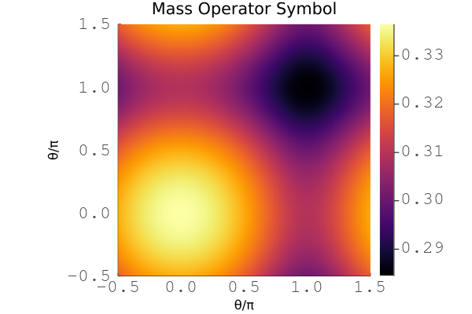
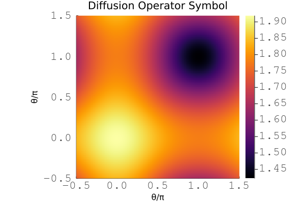

Finite Element Operator
The finite element operator object provides the action of the user provide weak form on the given mesh and finite element bases. This weak form follows the representation given in [2].
Examples
This is an example of a scalar mass operator in two dimensions.
# ------------------------------------------------------------------------------
# mass matrix example
# ------------------------------------------------------------------------------
using LFAToolkit
using LinearAlgebra
# setup
mesh = Mesh2D(1.0, 1.0)
basis = TensorH1LagrangeBasis(4, 4, 1, 2)
# weak form
function massweakform(u::Array{Float64}, w::Array{Float64})
v = u * w[1]
return [v]
end
# mass operator
inputs = [
OperatorField(basis, [EvaluationMode.interpolation]),
OperatorField(basis, [EvaluationMode.quadratureweights]),
]
outputs = [OperatorField(basis, [EvaluationMode.interpolation])]
mass = Operator(massweakform, mesh, inputs, outputs)
# compute operator symbols
A = computesymbols(mass, [π, π])
eigenvalues = real(eigvals(A))
# ------------------------------------------------------------------------------

Plot for the symbol of the finite element operator for the 2D scalar mass problem with cubic basis.
This is an example of a scalar diffusion operator in two dimensions.
# ------------------------------------------------------------------------------
# diffusion operator example
# ------------------------------------------------------------------------------
using LFAToolkit
using LinearAlgebra
# setup
mesh = Mesh2D(1.0, 1.0)
basis = TensorH1LagrangeBasis(4, 4, 1, 2)
# weak form
function diffusionweakform(du::Array{Float64}, w::Array{Float64})
dv = du * w[1]
return [dv]
end
# diffusion operator
inputs = [
OperatorField(basis, [EvaluationMode.gradient]),
OperatorField(basis, [EvaluationMode.quadratureweights]),
]
outputs = [OperatorField(basis, [EvaluationMode.gradient])]
diffusion = Operator(diffusionweakform, mesh, inputs, outputs)
# compute operator symbols
A = computesymbols(diffusion, [π, π])
eigenvalues = real(eigvals(A))
# ------------------------------------------------------------------------------

Plot for the symbol of the finite element operator for the 2D scalar diffusion problem with cubic basis.
Documentation
The finite element operator can be defined from a user defined weak form or from the gallery of weak forms for select PDEs.
LFAToolkit.Operator — TypeOperator(
weakform,
mesh,
inputs,
outputs
)Finite element operator comprising of a weak form and bases
Arguments:
weakform: user provided function that represents weak form at quadrature pointsmesh: mesh object with deformation in each dimensioninputs: array of operator input fieldsoutputs: array of operator output fields
Returns:
- Finite element operator object
Example:
# setup
mesh = Mesh2D(1.0, 1.0);
basis = TensorH1LagrangeBasis(4, 4, 1, 2);
function massweakform(u::Array{Float64}, w::Array{Float64})
v = u*w[1]
return [v]
end
# mass operator
inputs = [
OperatorField(basis, [EvaluationMode.interpolation]),
OperatorField(basis, [EvaluationMode.quadratureweights]),
];
outputs = [OperatorField(basis, [EvaluationMode.interpolation])];
mass = Operator(massweakform, mesh, inputs, outputs);
# verify
println(mass)
# output
finite element operator:
2d mesh:
dx: 1.0
dy: 1.0
2 inputs:
operator field:
tensor product basis:
numbernodes1d: 4
numberquadraturepoints1d: 4
numbercomponents: 1
dimension: 2
evaluation mode:
interpolation
operator field:
tensor product basis:
numbernodes1d: 4
numberquadraturepoints1d: 4
numbercomponents: 1
dimension: 2
evaluation mode:
quadratureweights
1 output:
operator field:
tensor product basis:
numbernodes1d: 4
numberquadraturepoints1d: 4
numbercomponents: 1
dimension: 2
evaluation mode:
interpolationLFAToolkit.computesymbols — Methodcomputesymbols(operator, θ)Compute the symbol matrix for an operator
Arguments:
operator: finite element operator to compute symbol matrix forθ: Fourier mode frequency array (one frequency per dimension)
Returns:
- Symbol matrix for the operator
Example:
using LinearAlgebra;
for dimension in 1:3
# setup
mesh = []
if dimension == 1
mesh = Mesh1D(1.0);
elseif dimension == 2
mesh = Mesh2D(1.0, 1.0);
elseif dimension == 3
mesh = Mesh3D(1.0, 1.0, 1.0);
end
diffusion = GalleryOperator("diffusion", 3, 3, mesh);
# compute symbols
A = computesymbols(diffusion, π*ones(dimension));
# verify
eigenvalues = real(eigvals(A));
if dimension == 1
@assert minimum(eigenvalues) ≈ 1
@assert maximum(eigenvalues) ≈ 4/3
elseif dimension == 2
@assert minimum(eigenvalues) ≈ 2/3
@assert maximum(eigenvalues) ≈ 64/45
elseif dimension == 3
@assert minimum(eigenvalues) ≈ 1/3
@assert maximum(eigenvalues) ≈ 256/225
end
end
# output